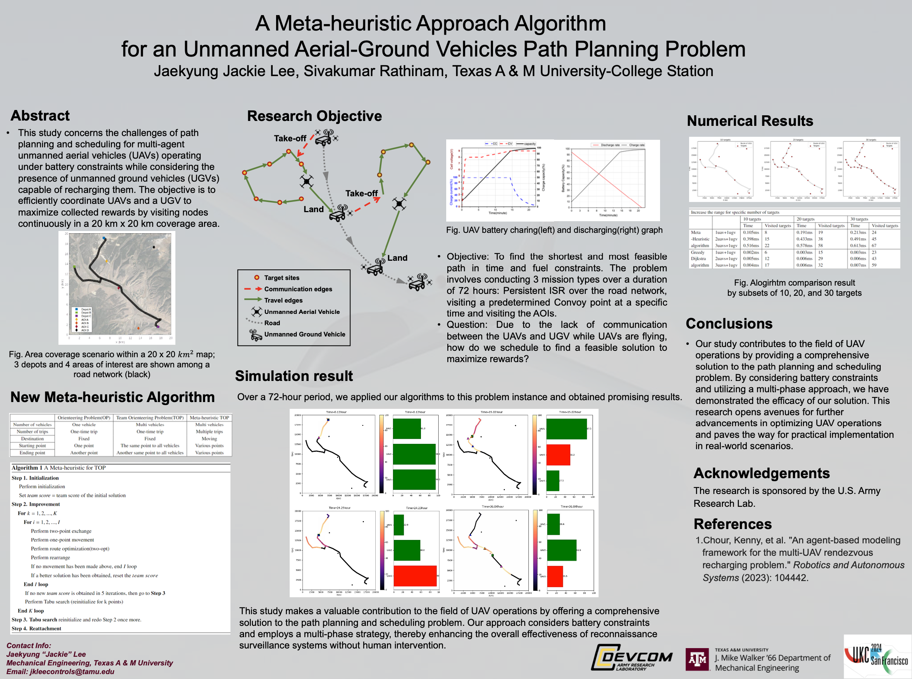
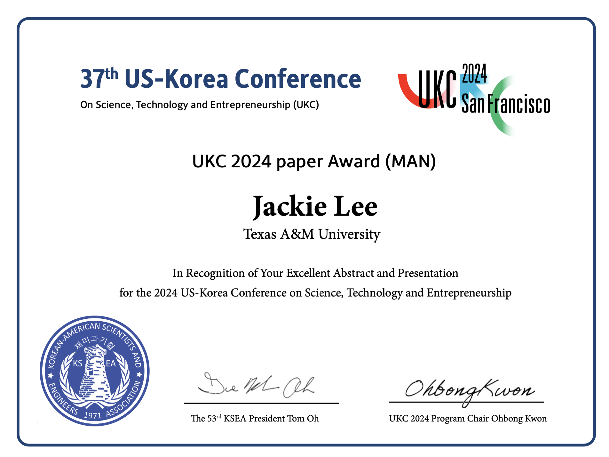

(2nd place) UKC 2024 Poster Presentation

I had the opportunity to present my research at the UKC 2024 Poster Presentation, focusing on advanced routing problems and simulation using Python. Competing against numerous talented researchers, I was honored to be awarded 2nd place for my work.

The presentation highlighted my approach to solving complex routing problems through innovative simulation techniques. Using Python, I developed algorithms that optimize routes in various scenarios, demonstrating both efficiency and scalability. This recognition not only validates the technical depth of my research but also inspires me to continue exploring solutions that push the boundaries of current technologies.